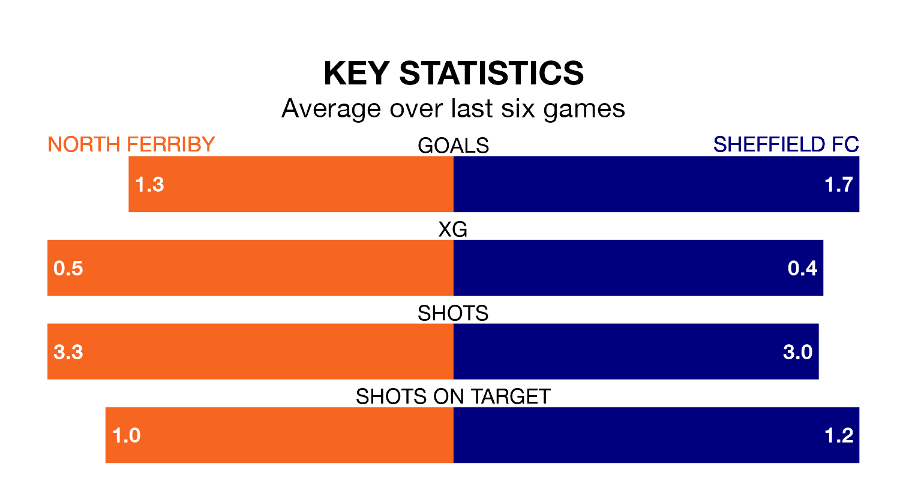

Sheffield FC travel to North Ferriby on Saturday in the Northern Premier League Division One East.
The visitors come into the game on the back of a win in their last match, having beaten Dunston UTS 3-2 at home.
North Ferriby, meanwhile, lost their last match, 1-0 against Ossett United.
With 53 goals in 32 games so far this season, Sheffield FC are scoring more than average in the league with 1.7 goals per game. But they are conceding more than average too, letting in 55 goals at a rate of 1.7 per game.
North Ferriby, meanwhile, are average scorers, with 1.5 goals per game. They have conceded 1.9 goals per game.
The home side are in disappointing form in the Northern Premier League Division One East, with two wins and four losses from their last six games.
With two wins and two draws over that period, the visitors' form is slightly better – they have taken eight points from 18, compared to North Ferriby's six.
North Ferriby are ninth in the table after 35 games, of which they have won 15 and drawn three, earning 48 points.
Sheffield FC are three places behind the hosts in 12th, with 13 wins and five draws putting them on 44 points.
Updated: 15:40 (UTC), 18/04/24